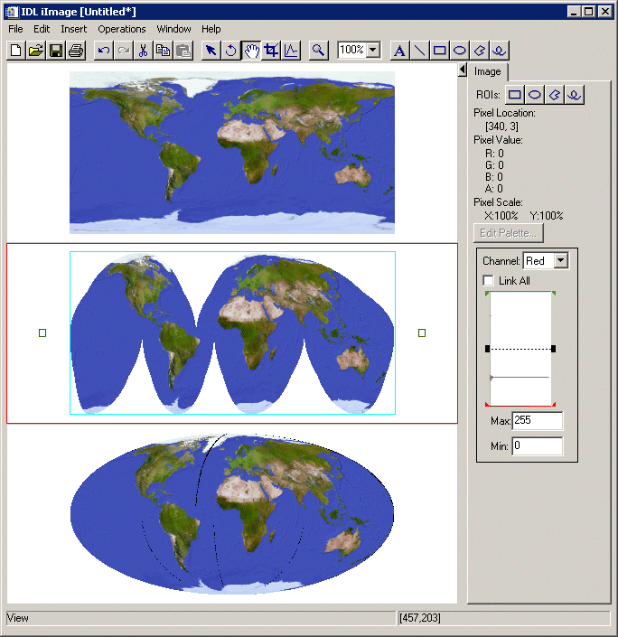

The MAP_PROJ_IMAGE function warps an image (or other 2-dimensional dataset) from geographic coordinates (longitude and latitude) to a specified map projection.
Note: Pass in the result from MAP_PROJ_INIT using this function’s MAP_STRUCTURE keyword to set up the desired map projection.
Optionally, the MAP_PROJ_IMAGE function can be used to warp an image in Cartesian (UV) coordinates from one map projection to another.
Result = MAP_PROJ_IMAGE( Image [, Range ] [, / BILINEAR ] [, DIMENSIONS = vector ] [, IMAGE_STRUCTURE = structure ] [, MAP_STRUCTURE = structure ] [, MASK = variable ] [, MAX_VALUE = value ] [, MIN_VALUE = value ] [, MISSING = value ] [, UVRANGE = variable ] [, XINDEX = variable ] [, YINDEX = variable ] )
This routine returns a two-dimensional array containing the warped image. The returned array has the same type as the input image.
A two-dimensional array containing the image to warp.
If you are warping Image from geographic coordinates to a map projection, Range is a four-element array specifying the longitude/latitude range (in degrees) of Image. Range has the format [ Lonmin , Latmin , Lonmax , Latmax ]. If Range is not supplied, the routine uses a default range of [-180, -90, 180, 90].
If you are warping Image from one map projection to another (that is, if you provide a value for the IMAGE_STRUCTURE keyword), then Range is a four-element array specifying the Cartesian (UV) range. In this case, Range must be provided and has the format [ Umin , Vmin , Umax , Vmax ].
Tip: Use the UVRANGE keyword to retrieve the range in Cartesian (UV) coordinates of Result .
Set this keyword to use bilinear interpolation when warping Image . By default, the routine will use nearest neighbor sampling. Bilinear interpolation will produce smoother results but may be slower.
Set this keyword equal to a two-element vector specifying the width and height of the desired Result , in pixels. If this keyword is not specified, then the Result has the same dimensions as the input Image .
If the input Image is already in a certain projection, set this keyword equal to the !MAP structure associated with the input image. If IMAGE_STRUCTURE is supplied, the Range argument must be provided. In this case, Image will be warped from the projection specified by IMAGE_STRUCTURE to the projection specified by MAP_STRUCTURE.
Set this keyword equal to a !MAP structure (as returned from the MAP_PROJ_INIT function) to be used instead of the default !MAP projection. If this keyword is not specified, the value of the !MAP system variable must have been previously set.
Set this keyword equal to a named variable that will contain a byte array of the same dimensions as the Result , containing a mask of the “good” values. Values in Result that were set to MISSING (that is, the values were either off the map or outside the range specified by the MIN_VALUE and MAX_VALUE keywords) will have a mask value of 0 (zero), while all other mask values will be 1 (one).
Tip: The MASK array allows you to distinguish values in the Result that were explicitly set to MISSING versus those that happen to have a value equal to the MISSING value.
Set this keyword equal to an integer that represents the maximum value an element of the Result array should be allowed to have. Data points with values greater than or equal to this value will be treated as missing data, and will be set to the value specified by the MISSING keyword.
Set this keyword equal to an integer that represents the minimum value an element of the Result array should be allowed to have. Data points with values less than or equal to this value will be treated as missing data, and will be set to the value specified by the MISSING keyword.
Set this keyword equal to an integer value to be used for pixels that fall outside of the valid map coordinates or whose data values are outside of the range specified by the MIN_VALUE and MAX_VALUE keywords. The default value is 0.
Set this keyword equal to a named variable that will contain the range of the UV coordinates of the Result in a four-element array of the form [ U min , V min , U max , V max ].
Set this keyword equal to a named variable that will contain the x index used to warp the image. Use this keyword (with YINDEX ) when warping multiple images (or image channels) that have the same dimensions and map projection. For the first call to MAP_PROJ_IMAGE, XINDEX and YINDEX should be set to named variables that are either undefined or contain scalar values. Upon return, XINDEX and YINDEX contain the indices that were used for warping the image. For subsequent images, the XINDEX and YINDEX variables should be passed in unmodified. In this case, IDL bypasses the map projection and uses the indices to warp the image.
Set this keyword equal to a named variable that will contain the y index used to warp the image. Use this keyword (with XINDEX ) when warping multiple images (or image channels) that have the same dimensions and map projection. For the first call to MAP_PROJ_IMAGE, XINDEX and YINDEX should be set to named variables that are either undefined or contain scalar values. Upon return, XINDEX and YINDEX contain the indices that were used for warping the image. For subsequent images, the XINDEX and YINDEX variables should be passed in unmodified. In this case, IDL bypasses the map projection and uses the indices to warp the image.
Note: If the XINDEX and YINDEX keywords are present, IDL ignores the Range argument and the IMAGE_STRUCTURE , MAP_STRUCTURE , and UVRANGE keywords. If you specified the BILINEAR , DIMENSIONS , MAX_VALUE , MIN_VALUE , or MISSING keywords on the first call to MAP_PROJ_IMAGE, you should supply the same keywords with the same values on subsequent calls.
The following example warps a global map from longitude/latitude (geographic) coordinates into the Interrupted Goode projection:
; Load an image in longitude/latitude (geographic) coordinates
file = FILEPATH( 'avhrr.png', SUBDIRECTORY=['examples','data'] )
data = READ_PNG( file, r, g, b )
; Resize the image data
red0 = REBIN( r[data], 360, 180 )
green0 = REBIN( g[data], 360, 180)
blue0 = REBIN( b[data], 360, 180 )
iImage, RED=red0, GREEN=green0, BLUE=blue0, $
DIMENSIONS=[500,600], VIEW_GRID=[1,3]
; First map projection
sMap = MAP_PROJ_INIT('Interrupted Goode')
; Warp each channel to the map projection. For the first
; channel also compute the MASK and the UVRANGE.
; Use XINDEX and YINDEX to speed up green and blue channels.
red1 = MAP_PROJ_IMAGE( red0, MAP_STRUCTURE=sMap, MASK=mask, $
UVRANGE=uvrange, XINDEX=xindex, YINDEX=yindex )
green1 = MAP_PROJ_IMAGE( green0, XINDEX=xindex, YINDEX=yindex )
blue1 = MAP_PROJ_IMAGE( blue0, XINDEX=xindex, YINDEX=yindex )
IIMAGE, RED=red1, GREEN=green1, BLUE=blue1, ALPHA=mask*255b, $
/VIEW_NEXT
Now warp the image from the Interrupted Goode projection to a new projection:
; New map projection
mapStruct = MAP_PROJ_INIT( 'Mollweide', /GCTP )
; Now use the IMAGE_STRUCTURE keyword to warp each channel
; from the Interrupted Goode projection to Mollweide.
; We also need to input the UVRANGE of the input image.
; Use XINDEX and YINDEX to speed up green and blue channels,
; but use a new variable since we already have xindex/yindex.
red2 = MAP_PROJ_IMAGE( red1, uvrange, IMAGE_STRUCTURE=sMap, $
MAP_STRUCTURE=mapStruct, MASK=mask, $
XINDEX=xindex2, YINDEX=yindex2 )
green2 = MAP_PROJ_IMAGE( green1, XINDEX=xindex2, YINDEX=yindex2 )
blue2 = MAP_PROJ_IMAGE( blue1, XINDEX=xindex2, YINDEX=yindex2 )
IIMAGE, RED=red2, GREEN=green2, BLUE=blue2, ALPHA=mask*255b, $
/VIEW_NEXT
The resulting iImage tool display is shown in the following figure.
|
 |
|
6.1 |
Introduced |
|
6.2 |
XINDEX and YINDEX keywords added |
INDGEN , MAP_PROJ_FORWARD , MAP_PROJ_INIT